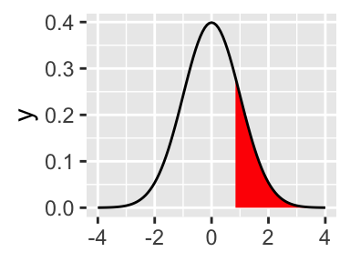

pnorm(2) [1] 0.9772499\(z\)-scores and Probability
The old-fashioned way to find the probability (the proportion of the distribution) associated with particular \(z\)-scores would be to look the score up in a \(z\)-score table (Unit Normal Table). R can do this for us much more easily, but it’s a good idea to check your first few answers against a table, e.g. https://www.westga.edu/academics/research/vrc/assets/docs/UnitNormalTable.pdf
If you have a \(z\)-score in mind and want to know the associated probability, use the pnorm() function. By default, pnorm() assumes we want the proportion of the distribution to the left of the \(z\)-score we specify.
pnorm(2) [1] 0.9772499So .9772499, or ~98% of scores in a normal distribution are less than \(z = 2\). Here’s what that looks like:

To get the proportion to the right, we set the lower.tail argument to FALSE (i.e. we want the upper tail)
pnorm(2, lower.tail = FALSE)[1] 0.02275013That tells us that ~2% of scores are greater than \(z = 2\). Here’s what that looks like:

Think about how R’s lower.tail distinction corresponds to the “body” vs. “tail” distinction. It’s not always necessarily the same.
To find the proportion of the normal distribution between two \(z\)-scores, one way would be to subtract p(lower score) from p(higher score)
pnorm(.25) - pnorm(-.25)[1] 0.1974127
Just under .20, or 20% is between \(z = -.25\) and \(z = .25\). Note that the slightly different code below gives the same answer. Do you understand why? Either solution is perfectly acceptable.
pnorm(-.25, lower.tail = F) - pnorm(.25, lower.tail = F)[1] 0.1974127When you have a proportion (quantile) in mind and want to find the associated z-score, qnorm() is the appropriate function
qnorm(.05)[1] -1.644854That tells us that the cutoff for the lowest 5% of the distribution corresponds to \(z = -1.64\). qnorm() also accepts the lower.tail argument
qnorm(.05, lower.tail = FALSE) # Now we get a positive value[1] 1.644854The line below gives the same answer. Do you understand why?
qnorm(.95, lower.tail = TRUE)[1] 1.644854The last thing you need to know for the questions below is that both pnorm() and qnorm() have optional arguments for the mean and SD of the distribution. That is, if we have raw scores, we don’t have to convert to \(z\)-scores to use these functions, we can just specify the appropriate values.
pnorm(130, mean = 100, sd = 15)[1] 0.9772499Do you find the graphs in the instructions above helpful? With the kinds of questions in this problem set, I find it massively useful to sketch a rough normal curve on a piece of paper and mark approximately where the \(z\)-scores would go, and shade in the corresponding probability region. My strong recommendation is that you do that on a piece of paper.
If are falling in love with R and ggplot in particular, however, you can draw distributions right in your problem set using ggplot.
library(ggplot2)
ggplot() +
stat_function(fun = dnorm,
geom = "density",
xlim = c(-2, 2),
fill = "red", color = NA) +
stat_function(fun = dnorm, xlim = c(-4, 4))
The first stat_function() layer draws the red shaded region, and the second one draws the black line of the full normal curve. I picked c(-4, 4) for the xlims of the full curve because that’s wide enough to show the ends tailing off to 0. For the shaded region, c(-2, 2) was just an arbitrary choice.
Say you wanted to shade the region below \(z = 2\). You could use:
ggplot() +
stat_function(fun = dnorm,
geom = "density",
xlim = c(-4, 2), # xlim goes up to 2
fill = "red", color = NA) +
stat_function(fun = dnorm, xlim = c(-4, 4))
That gives you a good visual sense that most of the distribution is below that point, so when pnorm(2) gives you the answer, it should make sense.
pnorm(2)[1] 0.9772499Or say you want to see what the highest 20% of the distribution looks like.
ggplot() +
stat_function(fun = dnorm, geom = "density",
xlim = c(qnorm(0.2, lower.tail = FALSE), 4),
fill = "red", color = NA) +
stat_function(fun = dnorm, xlim = c(-4, 4))
Or a region of 40% in the middle of the distribution, separating 30% in each tail:
ggplot() +
stat_function(fun = dnorm, geom = "density",
xlim = c(qnorm(0.3), qnorm(0.3, lower.tail = FALSE)),
fill = "red", color = NA) +
stat_function(fun = dnorm, xlim = c(-4, 4))
You could even turn this into a convenient function…
plot_distribution <- function(lower_z = -4, upper_z = 4) {
ggplot() +
stat_function(fun = dnorm,
geom = "density",
xlim = c(lower_z, upper_z), # xlim goes up to 2
fill = "red", color = NA) +
stat_function(fun = dnorm, xlim = c(-4, 4))
}
plot_distribution(-2, 2)
I’m not saying this will make your life easier: you still have to know your way around ggplot(), pnorm(), qnorm(), and the idea of chopping the distribution into different regions. But it can be satisfying to produce a visual reference corresponding to your numeric answer.